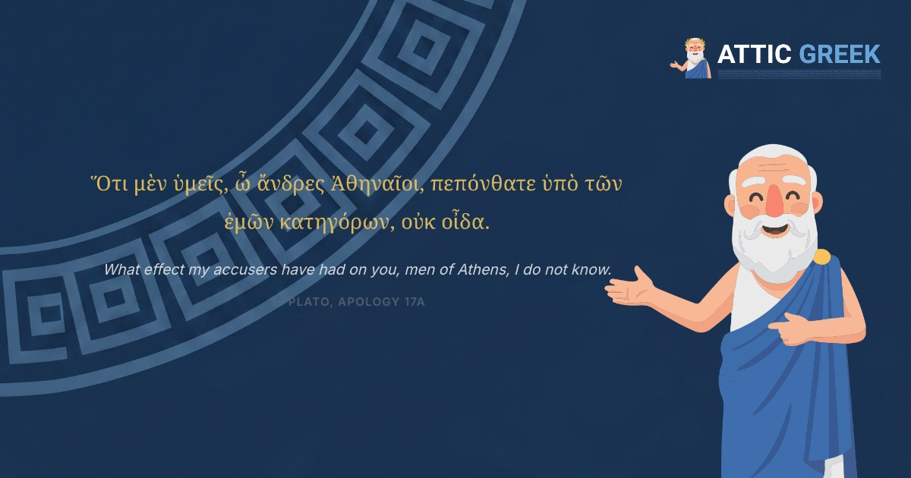

"Ancient Greek" is not one language. It is a family of dialects spread across a thousand years, and the two you will run into almost immediately — Attic and Koine — sound similar but unlock very different bookshelves. Here is what actually separates them, and how to decide where to start.
What is the difference between Attic and Koine Greek?
Attic Greek is the dialect spoken and written in Athens during the fifth and fourth centuries BC — the language of Plato, Aristotle, Thucydides, Sophocles, and Demosthenes. It is grammatically rich: it has an optative mood for expressing wishes and hypotheticals, a dual number for talking about exactly two of something, and a dense, flexible word order that Athenian prose writers used to devastating rhetorical effect.
Koine Greek ("common" Greek) is what Attic became after Alexander the Great's conquests spread Greek across the Eastern Mediterranean. As the language became a lingua franca for millions of non-native speakers, it simplified. The optative mood faded from everyday use. The dual number disappeared almost entirely. Word order settled into more predictable patterns. Koine is the Greek of the New Testament, the Septuagint, and most everyday writing from roughly 300 BC to 300 AD.
Put simply: Koine is Attic with the hardest edges worn down by centuries of use as a second language for a huge, diverse population. If Attic is the Greek of a small circle of literary Athenians writing for each other, Koine is the Greek of an empire.
Why did the language change from Attic to Koine?
Language simplifies when it has to serve more speakers with less shared context. Classical Athens was a relatively small, highly literate city where writers could assume a sophisticated audience. After Alexander, Greek became the administrative and trade language for Egyptians, Syrians, Jews, Persians, and dozens of other peoples who learned it as adults, not from birth. Forms that were hard to learn and easy to live without — the optative, the dual, some of the more baroque syntax of Attic oratory — gradually dropped away, the same way any language sheds irregularities when large numbers of non-native speakers use it daily.
You can see the shift directly by placing a sentence from each dialect side by side. Here is the opening line of Plato's Apology, written in Attic — Socrates addressing the jury at his trial:
Ὅτι μὲν ὑμεῖς, ὦ ἄνδρες Ἀθηναῖοι, πεπόνθατε ὑπὸ τῶν ἐμῶν κατηγόρων, οὐκ οἶδα.
What effect my accusers have had on you, men of Athens, I do not know.
Plato, Apology 17a
Now the opening of the Gospel of John, written in Koine roughly four centuries later:
Ἐν ἀρχῇ ἦν ὁ λόγος, καὶ ὁ λόγος ἦν πρὸς τὸν θεόν, καὶ θεὸς ἦν ὁ λόγος.
In the beginning was the word, and the word was with God, and the word was God.
John 1.1
Set next to each other, the family resemblance is obvious — the same alphabet, the same core verb εἰμί ("to be"), the same basic sentence machinery. But look closer. Plato opens with a subordinate clause (Ὅτι μὲν ὑμεῖς… πεπόνθατε, "what effect you have had") wrapped around the main clause before it even arrives, a construction typical of Attic oratory. John opens with three short, independent clauses stacked one after another, joined by a plain καί ("and") each time — direct, repetitive, built for a listener to follow without re-reading. The vocabulary differs too: Plato's ἄνδρες Ἀθηναῖοι ("men of Athens") is a piece of civic address that means nothing outside a courtroom in a Greek city-state, while John's vocabulary — ἀρχῇ, λόγος, θεόν ("beginning," "word," "God") — was chosen to be understood by an audience with no education in Athenian rhetoric at all. Same language, two very different jobs.
Which is harder to learn?
Attic, by most accounts. It has more grammatical forms to memorize, its authors write in longer and more intricate sentences, and its vocabulary is larger and more literary. Koine simplified exactly the features that make Attic difficult — fewer moods, fewer irregular forms, more direct syntax — and its best-known text, the New Testament, was written in a comparatively plain register for a general readership, not for an audience of professional rhetoricians.
That said, "harder" does not mean "hard." Both dialects are built on the same regular system of noun declensions and verb conjugations. Once you have learned the alphabet and the core grammar of one, the other is a matter of adjustment, not starting over.
Which should you learn first?
This depends entirely on what you want to read.
Learn Attic first if you want broad access to classical literature and philosophy — Plato's dialogues, Aristotle, Thucydides' history, Greek tragedy, Homer (with some adjustment for the older Homeric dialect). Attic is also the practical choice because it is the best-documented dialect in the world: nearly every major Ancient Greek grammar and textbook, from Athenaze to the Cambridge Greek Course, teaches Attic first. This is also why most university Classics departments start here. Once you know Attic well, reading Koine requires learning a smaller set of differences rather than a new language.
Learn Koine first if your only goal is the New Testament and early Christian writing, and you have no particular interest in Plato, Homer, or Athenian history. Koine is a faster, more economical route to that one specific goal, and seminary and biblical-studies programs teach it directly for exactly this reason.
Most learners are not choosing between two closed doors — they are choosing which door to walk through first. Attic opens the wider one.
Can you read the New Testament if you learn Attic Greek?
Yes, and with relatively little extra work. Because Koine grew directly out of Attic, a reader who already knows Attic grammar and vocabulary mostly needs to notice where Koine simplified — the near-disappearance of the optative, a handful of vocabulary shifts, a more consistent use of the definite article — rather than learn an unfamiliar system from the ground up. The reverse is not nearly as easy: Koine alone leaves real gaps in the grammar and vocabulary needed to read Plato's arguments or Thucydides' sentences, which regularly use forms Koine dropped.
This is the practical case for starting with Attic even if the New Testament is your eventual destination: you end up able to read both, instead of only one.
Start with the dialect that opens both doors
Attic Greek teaches the classical dialect from the alphabet up — 210 structured lessons, quizzes, flashcards, and annotated readings from Homer, Plato, Aristotle, and Thucydides, guided by Socrates himself. Once you know Attic, Koine and the New Testament are within easy reach.
Start with 5 free lessons →Five lessons and the opening of the Odyssey, free forever. Then $4.99/month or $34.99/year.